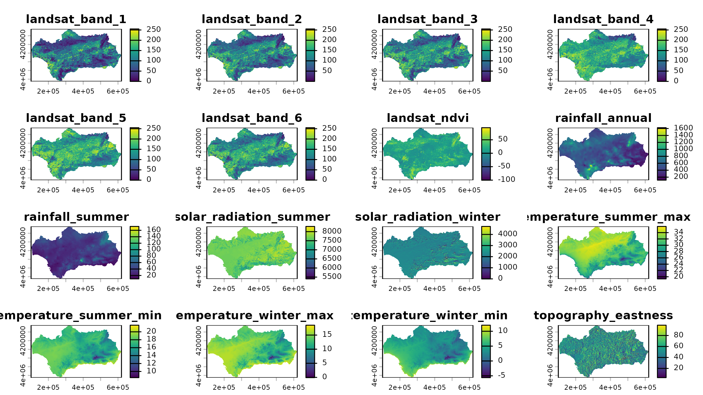

Overview
The andalusia dataset is an sf data frame
containing presence records for 90 plant species and background points
from Andalusia, Spain. The background points were generated randomly
across the entire study area to sample the combinations of environmental
conditions available.
Due to its large number of records, this dataset only contains
species identities and pairs of coordinates. The environmental
predictors are in the companion raster downloaded via
andalusia_extra(), while the predictor names are stored in
andalusia_predictors.
This dataset is well suited for species distribution modelling, clustering, multiclass classification, and spatial operations involving large-ish numbers of records.
Data Structure
The dataset is an sf data frame with 46465 rows and 3
columns.
dplyr::glimpse(andalusia)
#> Rows: 46,465
#> Columns: 3
#> $ species <chr> "Quercus_ilex_ballota", "Quercus_ilex_ballota", "Quercus_ilex…
#> $ presence <int> 1, 1, 1, 1, 1, 1, 1, 1, 1, 1, 1, 1, 1, 1, 1, 1, 1, 1, 1, 1, 1…
#> $ geometry <POINT [m]> POINT (320977.2 4288125), POINT (314577.2 4286125), POI…The data frame has 3 columns:
-
species(character): species names, with 91 different values. -
presence(integer): with value 1 for plant species and 0 for background records. -
geometry(POINT): with coordinate reference system ETRS89 / UTM zone 30N (EPSG:25830).
The table below shows the number of records per group.
andalusia |>
sf::st_drop_geometry() |>
dplyr::group_by(species) |>
dplyr::summarise(n = dplyr::n()) |>
dplyr::arrange(dplyr::desc(n))
#> # A tibble: 91 × 2
#> species n
#> <chr> <int>
#> 1 background 8692
#> 2 Pinus_halepensis 989
#> 3 Cistus_ladanifer 988
#> 4 Quercus_suber 980
#> 5 Cistus_populifolius_populifolius 977
#> 6 Pistacia_lentiscus 976
#> 7 Rosmarinus_officinalis 976
#> 8 Rubus_ulmifolius 947
#> 9 Ulex_parviflorus_parviflorus 939
#> 10 Eucalyptus_globulus 916
#> # ℹ 81 more rowsThe environmental raster matching this dataset is downloaded via
andalusia_extra(), which returns a multilayer
spatRaster object (R package terra).
andalusia_env <- spatialData::andalusia_extra()
plot(
x = andalusia_env,
col = colors
)
The spatRaster object contains 20 layers, all named in
the vector andalusia_predictors.
andalusia_predictors
#> [1] "landsat_band_1" "landsat_band_2" "landsat_band_3"
#> [4] "landsat_band_4" "landsat_band_5" "landsat_band_6"
#> [7] "landsat_ndvi" "rainfall_annual" "rainfall_summer"
#> [10] "solar_radiation_summer" "solar_radiation_winter" "temperature_summer_max"
#> [13] "temperature_summer_min" "temperature_winter_max" "temperature_winter_min"
#> [16] "topography_eastness" "topography_elevation" "topography_northness"
#> [19] "topography_position" "topography_slope"Each cell of the raster dataset represents 400 × 400 meters on the ground.
terra::res(andalusia_env)
#> [1] 400 400We pair each record in andalusia with its corresponding
cell values in andalusia_env via
terra::extract().
andalusia_env_df <- terra::extract(
x = andalusia_env,
y = andalusia,
ID = FALSE
)
andalusia <- dplyr::bind_cols(
andalusia,
andalusia_env_df
) |>
na.omit()
dplyr::glimpse(andalusia)
#> Rows: 46,463
#> Columns: 23
#> $ species <chr> "Quercus_ilex_ballota", "Quercus_ilex_ballota",…
#> $ presence <int> 1, 1, 1, 1, 1, 1, 1, 1, 1, 1, 1, 1, 1, 1, 1, 1,…
#> $ landsat_band_1 <dbl> 98.85989, 85.23322, 103.63580, 68.93472, 151.53…
#> $ landsat_band_2 <dbl> 102.25950, 91.43609, 97.54510, 65.84269, 159.89…
#> $ landsat_band_3 <dbl> 120.47082, 111.15762, 109.67588, 75.25600, 166.…
#> $ landsat_band_4 <dbl> 133.51358, 139.29692, 97.97874, 65.05608, 166.6…
#> $ landsat_band_5 <dbl> 163.65579, 142.38599, 137.16740, 112.19093, 191…
#> $ landsat_band_6 <dbl> 126.43008, 97.41518, 131.31789, 102.15392, 163.…
#> $ landsat_ndvi <dbl> 5.58579826, 13.40785694, -6.20389414, -7.286762…
#> $ rainfall_annual <dbl> 438.1153, 444.4159, 474.9400, 452.7251, 405.607…
#> $ rainfall_summer <dbl> 43.02710, 44.03641, 43.90874, 44.29456, 41.7911…
#> $ solar_radiation_summer <dbl> 7711.653, 7556.962, 7704.122, 7638.880, 7679.47…
#> $ solar_radiation_winter <dbl> 1951.640, 1325.617, 2056.618, 1669.973, 1830.93…
#> $ temperature_summer_max <dbl> 34.84408, 34.11757, 34.86726, 34.21207, 34.4381…
#> $ temperature_summer_min <dbl> 18.21624, 17.81210, 18.31562, 17.87338, 17.9606…
#> $ temperature_winter_max <dbl> 14.60926, 13.68775, 14.66240, 13.89417, 14.2525…
#> $ temperature_winter_min <dbl> 3.962335, 3.608699, 3.930102, 3.695227, 3.86753…
#> $ topography_eastness <dbl> 76.10881, 51.90067, 40.87642, 38.99799, 27.1143…
#> $ topography_elevation <dbl> 347.4608, 454.3534, 356.0224, 455.5842, 404.892…
#> $ topography_northness <dbl> 68.863571, 86.070404, 73.723236, 68.550499, 60.…
#> $ topography_position <dbl> -23.6095314, 1.2177124, -46.4343910, -15.821706…
#> $ topography_slope <dbl> 20.57511139, 10.51053429, 44.49013138, 8.364820…
#> $ geometry <POINT [m]> POINT (320977.2 4288125), POINT (314577.2…To speed up code execution in the next section, below we reduce the
resolution of andalusia_env by a factor of 4 via
aggregation.
Example Usage
In this section we use the andalusia dataset to build a
plant richness model by adding habitat suitability predictions from
binary random forest models trained with ranger::ranger().
Before fitting models, we convert presence to a factor
(required by ranger for classification modelling) and split
the data into two objects: species (presence records) and
background. This step will make sense soon!
#convert to factor
andalusia <- dplyr::mutate(
andalusia,
presence = factor(presence)
)
#separate background data
background <- dplyr::filter(
andalusia,
species == "background"
)
#separate species data
presence <- dplyr::filter(
andalusia,
species != "background"
)Modelling Steps
In this section we define the individual modelling steps for the species Pinus halepensis.
species_name <- "Pinus_halepensis"First, we filter the records belonging to the target species.
species_presence <- dplyr::filter(
presence,
species == species_name
)Next, we build a 10 km buffer around the species presences to exclude background points too close to presences. This step helps enhance the contrast between the environmental conditions of presence and background points the model needs to learn from.
species_presence_buffer <- sf::st_buffer(
x = species_presence,
dist = 10000 #in meters
) |>
sf::st_union()We use the buffer to identify which background points fall inside of
it using sf::st_contains() to remove them.
#identify background points contained by the buffer
background_inside_buffer <- sf::st_contains(
x = species_presence_buffer,
y = background,
sparse = FALSE
) |>
as.vector()
#select background outside the presence buffer
species_background <- background[!background_inside_buffer, ]The map below shows the 10 km buffer around the species presences and the background points that remain after filtering.